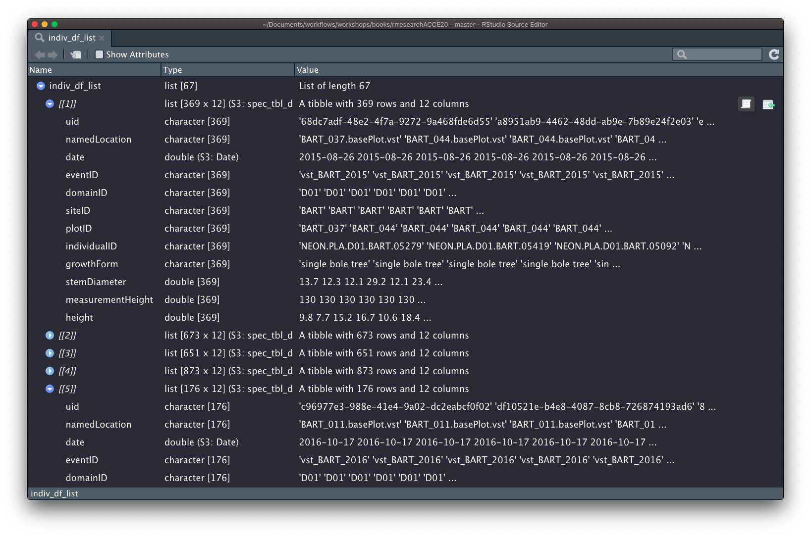

Iteration
Let’s say we want to repeat a process multiple times, iterating over a number of inputs. In this case we want to load every file in /data-raw/wood-survey-data-master/individual/.
We have a few options for how to approach this problem. In R there are two paradigms for iteration:
- imperative iterations: (for and while loops)
- great place to start because they make iteration very explicit.
- quite verbose, and require quite a bit of bookkeeping code that is duplicated for every
forloop.
- functional programming: using functions to iterate over other functions.
- focus is on the operation being performed rather than the bookkeeping.
- can be more elegant and succinct.
Iterating using loops
Simple loop
Here’s an example of a simple loop. During each iteration, it prints a message to the console, reporting the value of i.
for(i in 1:10){
print(paste0("i is ", i))
}## [1] "i is 1"
## [1] "i is 2"
## [1] "i is 3"
## [1] "i is 4"
## [1] "i is 5"
## [1] "i is 6"
## [1] "i is 7"
## [1] "i is 8"
## [1] "i is 9"
## [1] "i is 10"The loop iterates over the vector of values supplied in 1:10, sequentially assigning a new value to variable i each iteration. i is therefore the varying input and everything else in the code stays the same during each iteration.
Loops in practice
Reading in multiple files
Let’s now apply a loop to read in all 67 files at once.
We have the file paths in our individual_paths vector. This is the input we want to iterate over. We can use a for loop to supply each path as the file argument in readr::read_csv().
Storing loop outputs
The previous loop we saw didn’t generate any new objects, it just printed output to the console. We, however, need to store the output of each iteration (the tibble we’ve just read in).
It’s important for efficiency to allocate sufficient space for the output before starting a for loop. Growing the for loop at each iteration, using c() for example, will be very slow.
Let’s create an output vector to store the tibbles containing the read in data. We want it to be a list because we’ll be storing heterogeneous objects (tibbles) in each element.
indiv_df_list <- vector("list", length(individual_paths))
head(indiv_df_list)## [[1]]
## NULL
##
## [[2]]
## NULL
##
## [[3]]
## NULL
##
## [[4]]
## NULL
##
## [[5]]
## NULL
##
## [[6]]
## NULLWe’ve used the length() of the input to specify the size of our output list so each path gets an output element.
Looping over indices
Next, we need a sequence of indices as long as the input vector (individual_paths). We can use seq_along() to create our index vector:
seq_along(individual_paths)## [1] 1 2 3 4 5 6 7 8 9 10 11 12 13 14 15 16 17 18 19 20 21 22 23 24 25
## [26] 26 27 28 29 30 31 32 33 34 35 36 37 38 39 40 41 42 43 44 45 46 47 48 49 50
## [51] 51 52 53 54 55 56 57 58 59 60 61 62 63 64 65 66 67Now we’re ready to write our for loop.
for(i in seq_along(individual_paths)){
indiv_df_list[[i]] <- readr::read_csv(individual_paths[[i]])
}At each step of the iteration, the file specified in the ith element of individual_paths is read in and assigned to th ith element of our output list.
We can extract individual tibbles using [[ sub-setting to inspect:
indiv_df_list[[1]]## # A tibble: 376 x 12
## uid namedLocation date eventID domainID siteID plotID individualID
## <chr> <chr> <date> <chr> <chr> <chr> <chr> <chr>
## 1 a36a16… BART_037.base… 2015-08-26 vst_BA… D01 BART BART_… NEON.PLA.D0…
## 2 68dc7a… BART_037.base… 2015-08-26 vst_BA… D01 BART BART_… NEON.PLA.D0…
## 3 a8951a… BART_044.base… 2015-08-26 vst_BA… D01 BART BART_… NEON.PLA.D0…
## 4 eb348e… BART_044.base… 2015-08-26 vst_BA… D01 BART BART_… NEON.PLA.D0…
## 5 2a4478… BART_044.base… 2015-08-26 vst_BA… D01 BART BART_… NEON.PLA.D0…
## 6 e48520… BART_044.base… 2015-08-26 vst_BA… D01 BART BART_… NEON.PLA.D0…
## 7 280c90… BART_044.base… 2015-08-26 vst_BA… D01 BART BART_… NEON.PLA.D0…
## 8 0e5060… BART_044.base… 2015-08-26 vst_BA… D01 BART BART_… NEON.PLA.D0…
## 9 4918ca… BART_044.base… 2015-08-26 vst_BA… D01 BART BART_… NEON.PLA.D0…
## 10 ef16cb… BART_044.base… 2015-08-26 vst_BA… D01 BART BART_… NEON.PLA.D0…
## # … with 366 more rows, and 4 more variables: growthForm <chr>,
## # stemDiameter <dbl>, measurementHeight <dbl>, height <dbl>indiv_df_list[[2]]## # A tibble: 714 x 12
## uid namedLocation date eventID domainID siteID plotID individualID
## <chr> <chr> <date> <chr> <chr> <chr> <chr> <chr>
## 1 fb75a8… BART_036.base… 2015-09-01 vst_BA… D01 BART BART_… NEON.PLA.D0…
## 2 30a7c7… BART_046.base… 2015-09-01 vst_BA… D01 BART BART_… NEON.PLA.D0…
## 3 789d03… BART_072.base… 2015-09-01 vst_BA… D01 BART BART_… NEON.PLA.D0…
## 4 0e4fb3… BART_072.base… 2015-09-01 vst_BA… D01 BART BART_… NEON.PLA.D0…
## 5 cb0e45… BART_036.base… 2015-09-01 vst_BA… D01 BART BART_… NEON.PLA.D0…
## 6 5fc5cf… BART_072.base… 2015-09-01 vst_BA… D01 BART BART_… NEON.PLA.D0…
## 7 5d15fa… BART_046.base… 2015-09-01 vst_BA… D01 BART BART_… NEON.PLA.D0…
## 8 d27a1b… BART_036.base… 2015-09-01 vst_BA… D01 BART BART_… NEON.PLA.D0…
## 9 d5f9ab… BART_036.base… 2015-09-01 vst_BA… D01 BART BART_… NEON.PLA.D0…
## 10 e52c3b… BART_036.base… 2015-09-01 vst_BA… D01 BART BART_… NEON.PLA.D0…
## # … with 704 more rows, and 4 more variables: growthForm <chr>,
## # stemDiameter <dbl>, measurementHeight <dbl>, height <dbl>We can also inspect the contents of our output list interactively using View()

Looping over objects
We can also loop over objects instead of indices.
indiv_df_list <- vector("list", length(individual_paths))
names(indiv_df_list) <- basename(individual_paths)
for(path in individual_paths){
indiv_df_list[[basename(path)]] <- readr::read_csv(path)
}In this case, we supply the paths themselves as the input to our loop and these are passed as-is to read_csv().
This time we don’t have our element indices to index the elements of the output list each tibble should be stored in. To get around this we assign names to each element and index the output list by name.
I’ve chosen to use the basename (actual file name) of each path as a name, which I can get through basename().
individual_paths[1]
basename(individual_paths[1])## /cloud/project/data-raw/wood-survey-data-master/individual/NEON.D01.BART.DP1.10098.001.vst_apparentindividual.2015-08.basic.20190806T172340Z.csv## [1] "NEON.D01.BART.DP1.10098.001.vst_apparentindividual.2015-08.basic.20190806T172340Z.csv"Collapsing our output list into a single tibble.
Now we’ve got our list of tibbles, we want to collapse or “reduce” our output list into a single tibble. There are a number of ways to do this in R.
Base R
One first approach we might think of is to use base function rbind(). This takes any number of tibbles as arguments and binds them all together.
rbind(indiv_df_list) %>% head()## NEON.D01.BART.DP1.10098.001.vst_apparentindividual.2015-08.basic.20190806T172340Z.csv
## indiv_df_list List,12
## NEON.D01.BART.DP1.10098.001.vst_apparentindividual.2015-09.basic.20190806T144119Z.csv
## indiv_df_list List,12
## NEON.D01.BART.DP1.10098.001.vst_apparentindividual.2016-08.basic.20190806T143255Z.csv
## indiv_df_list List,12
## NEON.D01.BART.DP1.10098.001.vst_apparentindividual.2016-09.basic.20190806T143433Z.csv
## indiv_df_list List,12
## NEON.D01.BART.DP1.10098.001.vst_apparentindividual.2016-10.basic.20190806T144133Z.csv
## indiv_df_list List,12
## NEON.D01.BART.DP1.10098.001.vst_apparentindividual.2017-07.basic.20190806T144111Z.csv
## indiv_df_list List,12
## NEON.D01.BART.DP1.10098.001.vst_apparentindividual.2017-08.basic.20190806T143426Z.csv
## indiv_df_list List,12
## NEON.D01.BART.DP1.10098.001.vst_apparentindividual.2017-09.basic.20190806T143740Z.csv
## indiv_df_list List,12
## NEON.D01.BART.DP1.10098.001.vst_apparentindividual.2018-08.basic.20190806T143026Z.csv
## indiv_df_list List,12
## NEON.D01.BART.DP1.10098.001.vst_apparentindividual.2018-09.basic.20190806T144743Z.csv
## indiv_df_list List,12
## NEON.D01.HARV.DP1.10098.001.vst_apparentindividual.2015-08.basic.20190806T155155Z.csv
## indiv_df_list List,12
## NEON.D01.HARV.DP1.10098.001.vst_apparentindividual.2015-09.basic.20190806T155228Z.csv
## indiv_df_list List,12
## NEON.D01.HARV.DP1.10098.001.vst_apparentindividual.2015-10.basic.20190806T160029Z.csv
## indiv_df_list List,12
## NEON.D01.HARV.DP1.10098.001.vst_apparentindividual.2015-11.basic.20190806T155340Z.csv
## indiv_df_list List,12
## NEON.D01.HARV.DP1.10098.001.vst_apparentindividual.2016-07.basic.20190806T154424Z.csv
## indiv_df_list List,12
## NEON.D01.HARV.DP1.10098.001.vst_apparentindividual.2016-08.basic.20190806T155619Z.csv
## indiv_df_list List,12
## NEON.D01.HARV.DP1.10098.001.vst_apparentindividual.2016-09.basic.20190806T155751Z.csv
## indiv_df_list List,12
## NEON.D01.HARV.DP1.10098.001.vst_apparentindividual.2016-10.basic.20190806T154902Z.csv
## indiv_df_list List,12
## NEON.D01.HARV.DP1.10098.001.vst_apparentindividual.2017-07.basic.20190806T161731Z.csv
## indiv_df_list List,12
## NEON.D01.HARV.DP1.10098.001.vst_apparentindividual.2017-08.basic.20190806T155239Z.csv
## indiv_df_list List,12
## NEON.D01.HARV.DP1.10098.001.vst_apparentindividual.2017-09.basic.20190806T154054Z.csv
## indiv_df_list List,12
## NEON.D01.HARV.DP1.10098.001.vst_apparentindividual.2017-10.basic.20190806T154917Z.csv
## indiv_df_list List,12
## NEON.D01.HARV.DP1.10098.001.vst_apparentindividual.2018-09.basic.20190806T154756Z.csv
## indiv_df_list List,12
## NEON.D01.HARV.DP1.10098.001.vst_apparentindividual.2018-10.basic.20190904T080421Z.csv
## indiv_df_list List,12
## NEON.D02.BLAN.DP1.10098.001.vst_apparentindividual.2015-09.basic.20190806T180623Z.csv
## indiv_df_list List,12
## NEON.D02.BLAN.DP1.10098.001.vst_apparentindividual.2015-10.basic.20190806T180501Z.csv
## indiv_df_list List,12
## NEON.D02.BLAN.DP1.10098.001.vst_apparentindividual.2016-09.basic.20190806T180452Z.csv
## indiv_df_list List,12
## NEON.D02.BLAN.DP1.10098.001.vst_apparentindividual.2016-11.basic.20190806T162810Z.csv
## indiv_df_list List,12
## NEON.D02.BLAN.DP1.10098.001.vst_apparentindividual.2017-09.basic.20190806T180226Z.csv
## indiv_df_list List,12
## NEON.D02.BLAN.DP1.10098.001.vst_apparentindividual.2017-10.basic.20190806T162804Z.csv
## indiv_df_list List,12
## NEON.D02.BLAN.DP1.10098.001.vst_apparentindividual.2018-09.basic.20190806T162758Z.csv
## indiv_df_list List,12
## NEON.D02.BLAN.DP1.10098.001.vst_apparentindividual.2018-11.basic.20190930T153245Z.csv
## indiv_df_list List,12
## NEON.D03.DSNY.DP1.10098.001.vst_apparentindividual.2018-01.basic.20190806T170456Z.csv
## indiv_df_list List,12
## NEON.D03.DSNY.DP1.10098.001.vst_apparentindividual.2018-05.basic.20190806T165614Z.csv
## indiv_df_list List,12
## NEON.D04.GUAN.DP1.10098.001.vst_apparentindividual.2015-08.basic.20190806T155333Z.csv
## indiv_df_list List,12
## NEON.D04.GUAN.DP1.10098.001.vst_apparentindividual.2016-02.basic.20190806T151351Z.csv
## indiv_df_list List,12
## NEON.D04.GUAN.DP1.10098.001.vst_apparentindividual.2016-03.basic.20190806T151416Z.csv
## indiv_df_list List,12
## NEON.D04.GUAN.DP1.10098.001.vst_apparentindividual.2016-04.basic.20190806T151437Z.csv
## indiv_df_list List,12
## NEON.D04.GUAN.DP1.10098.001.vst_apparentindividual.2016-05.basic.20190806T154733Z.csv
## indiv_df_list List,12
## NEON.D04.GUAN.DP1.10098.001.vst_apparentindividual.2016-06.basic.20190806T155301Z.csv
## indiv_df_list List,12
## NEON.D04.GUAN.DP1.10098.001.vst_apparentindividual.2016-07.basic.20190806T155324Z.csv
## indiv_df_list List,12
## NEON.D04.GUAN.DP1.10098.001.vst_apparentindividual.2016-08.basic.20190806T153300Z.csv
## indiv_df_list List,12
## NEON.D04.GUAN.DP1.10098.001.vst_apparentindividual.2016-09.basic.20190806T151857Z.csv
## indiv_df_list List,12
## NEON.D04.GUAN.DP1.10098.001.vst_apparentindividual.2016-10.basic.20190806T154351Z.csv
## indiv_df_list List,12
## NEON.D04.GUAN.DP1.10098.001.vst_apparentindividual.2016-11.basic.20190806T152215Z.csv
## indiv_df_list List,12
## NEON.D04.GUAN.DP1.10098.001.vst_apparentindividual.2017-03.basic.20190806T152514Z.csv
## indiv_df_list List,12
## NEON.D04.GUAN.DP1.10098.001.vst_apparentindividual.2017-04.basic.20190806T154915Z.csv
## indiv_df_list List,12
## NEON.D04.GUAN.DP1.10098.001.vst_apparentindividual.2017-12.basic.20190806T164409Z.csv
## indiv_df_list List,12
## NEON.D04.GUAN.DP1.10098.001.vst_apparentindividual.2018-01.basic.20190806T150606Z.csv
## indiv_df_list List,12
## NEON.D04.GUAN.DP1.10098.001.vst_apparentindividual.2018-02.basic.20190806T150635Z.csv
## indiv_df_list List,12
## NEON.D07.GRSM.DP1.10098.001.vst_apparentindividual.2015-05.basic.20190806T151458Z.csv
## indiv_df_list List,12
## NEON.D07.GRSM.DP1.10098.001.vst_apparentindividual.2015-06.basic.20190806T151516Z.csv
## indiv_df_list List,12
## NEON.D07.GRSM.DP1.10098.001.vst_apparentindividual.2016-10.basic.20190806T154811Z.csv
## indiv_df_list List,12
## NEON.D07.GRSM.DP1.10098.001.vst_apparentindividual.2016-11.basic.20190806T154932Z.csv
## indiv_df_list List,12
## NEON.D07.GRSM.DP1.10098.001.vst_apparentindividual.2017-10.basic.20190806T155315Z.csv
## indiv_df_list List,12
## NEON.D07.GRSM.DP1.10098.001.vst_apparentindividual.2017-11.basic.20190806T164155Z.csv
## indiv_df_list List,12
## NEON.D07.GRSM.DP1.10098.001.vst_apparentindividual.2018-11.basic.20190930T154643Z.csv
## indiv_df_list List,12
## NEON.D08.DELA.DP1.10098.001.vst_apparentindividual.2015-06.basic.20190806T173627Z.csv
## indiv_df_list List,12
## NEON.D08.DELA.DP1.10098.001.vst_apparentindividual.2015-07.basic.20190806T165116Z.csv
## indiv_df_list List,12
## NEON.D08.DELA.DP1.10098.001.vst_apparentindividual.2015-09.basic.20190806T160924Z.csv
## indiv_df_list List,12
## NEON.D08.DELA.DP1.10098.001.vst_apparentindividual.2016-09.basic.20190806T161107Z.csv
## indiv_df_list List,12
## NEON.D08.DELA.DP1.10098.001.vst_apparentindividual.2016-10.basic.20190806T155600Z.csv
## indiv_df_list List,12
## NEON.D08.DELA.DP1.10098.001.vst_apparentindividual.2017-10.basic.20190806T161504Z.csv
## indiv_df_list List,12
## NEON.D08.DELA.DP1.10098.001.vst_apparentindividual.2017-11.basic.20190806T165044Z.csv
## indiv_df_list List,12
## NEON.D08.DELA.DP1.10098.001.vst_apparentindividual.2018-10.basic.20190904T074322Z.csv
## indiv_df_list List,12
## NEON.D08.DELA.DP1.10098.001.vst_apparentindividual.2018-11.basic.20190930T162311Z.csv
## indiv_df_list List,12
## NEON.D09.DCFS.DP1.10098.001.vst_apparentindividual.2015-09.basic.20190806T161704Z.csv
## indiv_df_list List,12Hmm, that doesn’t seem to have done what we want. That’s because rbind expects multiple tibbles as inputs and we’re giving it a single list. We somehow want to extract the contents of each element of indiv_df_list and pass them all to rbind.
For this we can use do.call.do.call takes a function or the name of a function we want to execute as it’s first argument, what. The second argument of do.call, args is a list of arguments we want to pass to the function specified in what. When do.call is executed, it extracts the elements of args and passes them as arguments to what.
do.call(what = "rbind", args = indiv_df_list)## # A tibble: 14,961 x 12
## uid namedLocation date eventID domainID siteID plotID individualID
## * <chr> <chr> <date> <chr> <chr> <chr> <chr> <chr>
## 1 a36a16… BART_037.base… 2015-08-26 vst_BA… D01 BART BART_… NEON.PLA.D0…
## 2 68dc7a… BART_037.base… 2015-08-26 vst_BA… D01 BART BART_… NEON.PLA.D0…
## 3 a8951a… BART_044.base… 2015-08-26 vst_BA… D01 BART BART_… NEON.PLA.D0…
## 4 eb348e… BART_044.base… 2015-08-26 vst_BA… D01 BART BART_… NEON.PLA.D0…
## 5 2a4478… BART_044.base… 2015-08-26 vst_BA… D01 BART BART_… NEON.PLA.D0…
## 6 e48520… BART_044.base… 2015-08-26 vst_BA… D01 BART BART_… NEON.PLA.D0…
## 7 280c90… BART_044.base… 2015-08-26 vst_BA… D01 BART BART_… NEON.PLA.D0…
## 8 0e5060… BART_044.base… 2015-08-26 vst_BA… D01 BART BART_… NEON.PLA.D0…
## 9 4918ca… BART_044.base… 2015-08-26 vst_BA… D01 BART BART_… NEON.PLA.D0…
## 10 ef16cb… BART_044.base… 2015-08-26 vst_BA… D01 BART BART_… NEON.PLA.D0…
## # … with 14,951 more rows, and 4 more variables: growthForm <chr>,
## # stemDiameter <dbl>, measurementHeight <dbl>, height <dbl>Success!
Tidyverse
There are also ways to do this using the tidyverse.
purrr::reduce
reduce from package purrr combines the elements of a vector or list into a single object according to the function supplied to .f.
purrr::reduce(indiv_df_list, .f = rbind)## # A tibble: 14,961 x 12
## uid namedLocation date eventID domainID siteID plotID individualID
## <chr> <chr> <date> <chr> <chr> <chr> <chr> <chr>
## 1 a36a16… BART_037.base… 2015-08-26 vst_BA… D01 BART BART_… NEON.PLA.D0…
## 2 68dc7a… BART_037.base… 2015-08-26 vst_BA… D01 BART BART_… NEON.PLA.D0…
## 3 a8951a… BART_044.base… 2015-08-26 vst_BA… D01 BART BART_… NEON.PLA.D0…
## 4 eb348e… BART_044.base… 2015-08-26 vst_BA… D01 BART BART_… NEON.PLA.D0…
## 5 2a4478… BART_044.base… 2015-08-26 vst_BA… D01 BART BART_… NEON.PLA.D0…
## 6 e48520… BART_044.base… 2015-08-26 vst_BA… D01 BART BART_… NEON.PLA.D0…
## 7 280c90… BART_044.base… 2015-08-26 vst_BA… D01 BART BART_… NEON.PLA.D0…
## 8 0e5060… BART_044.base… 2015-08-26 vst_BA… D01 BART BART_… NEON.PLA.D0…
## 9 4918ca… BART_044.base… 2015-08-26 vst_BA… D01 BART BART_… NEON.PLA.D0…
## 10 ef16cb… BART_044.base… 2015-08-26 vst_BA… D01 BART BART_… NEON.PLA.D0…
## # … with 14,951 more rows, and 4 more variables: growthForm <chr>,
## # stemDiameter <dbl>, measurementHeight <dbl>, height <dbl>dplyr::bind_rows
bind_rows offers a shortcut to reducing a list of tibbles.
dplyr::bind_rows(indiv_df_list)## # A tibble: 14,961 x 12
## uid namedLocation date eventID domainID siteID plotID individualID
## <chr> <chr> <date> <chr> <chr> <chr> <chr> <chr>
## 1 a36a16… BART_037.base… 2015-08-26 vst_BA… D01 BART BART_… NEON.PLA.D0…
## 2 68dc7a… BART_037.base… 2015-08-26 vst_BA… D01 BART BART_… NEON.PLA.D0…
## 3 a8951a… BART_044.base… 2015-08-26 vst_BA… D01 BART BART_… NEON.PLA.D0…
## 4 eb348e… BART_044.base… 2015-08-26 vst_BA… D01 BART BART_… NEON.PLA.D0…
## 5 2a4478… BART_044.base… 2015-08-26 vst_BA… D01 BART BART_… NEON.PLA.D0…
## 6 e48520… BART_044.base… 2015-08-26 vst_BA… D01 BART BART_… NEON.PLA.D0…
## 7 280c90… BART_044.base… 2015-08-26 vst_BA… D01 BART BART_… NEON.PLA.D0…
## 8 0e5060… BART_044.base… 2015-08-26 vst_BA… D01 BART BART_… NEON.PLA.D0…
## 9 4918ca… BART_044.base… 2015-08-26 vst_BA… D01 BART BART_… NEON.PLA.D0…
## 10 ef16cb… BART_044.base… 2015-08-26 vst_BA… D01 BART BART_… NEON.PLA.D0…
## # … with 14,951 more rows, and 4 more variables: growthForm <chr>,
## # stemDiameter <dbl>, measurementHeight <dbl>, height <dbl>Functional programming
Loops are an important basic concept in programming. However another approach available in R is functional programming which vectorises a function or pipe of functions over given input(s). We’ve actually just been using functional programming with do.call and reduce.
This idea of passing a function to another function is one of the behaviours that makes R a functional programming language and is extremely powerful.
It allows us to:
- use functions rather than
forloops to perform iteration over other functions. - wrap the code we want to iterate over in custom functions.
This iin turn allows us to replace many for loops with code that is both more succinct and easier to read.
In base R there is a family of apply functions (lapply, vapply, sapply, apply, mapply). These are handy to know if want to write workflows or software that are low on dependencies. However, I prefer using the functions in tidyverse package purrr.
Iterating using purrr
In the tidyverse such functionality is provided by package purrr, which provides a complete and consistent set of tools for working with functions and vectors of inputs.
The first thing we might try is to replace our for loop with a function.
map
The basic purrr function is map() and it allows us to pass the elements of an input vector or list to a single argument of a function we want to repeat. It also has a handy shortcut for specifying the argument to pass the input object to.
indiv_df_list <- purrr::map(individual_paths,
~readr::read_csv(file = .x))The first argument to map is the input vector of paths we want to iterate over. The next argument is a formula specifying the function we want to repeat as well as which argument the input is passed to.
Here we’re saying that we want to repeatedly run read_csv and we indicate the argument we want the input passed to (file) by .x. Note as well the ~ notation before the function definition which is shorthand for .f =.
map_df
Just like our loop, map returns an output list.
class(indiv_df_list)## [1] "list"We would therefore need to combine them together in another step.
However, one of the great things about purrr functions is that you can specify what you expect the output of the mapped function to be. THere are functions that take advantage of that knowledge and bind or format the outputs appropriately.
Because we know the output of read_csv() is a tibble, we can use map_df() instead of map().
individual <- purrr::map_df(individual_paths,
~readr::read_csv(.x))
individual## # A tibble: 14,961 x 12
## uid namedLocation date eventID domainID siteID plotID individualID
## <chr> <chr> <date> <chr> <chr> <chr> <chr> <chr>
## 1 a36a16… BART_037.base… 2015-08-26 vst_BA… D01 BART BART_… NEON.PLA.D0…
## 2 68dc7a… BART_037.base… 2015-08-26 vst_BA… D01 BART BART_… NEON.PLA.D0…
## 3 a8951a… BART_044.base… 2015-08-26 vst_BA… D01 BART BART_… NEON.PLA.D0…
## 4 eb348e… BART_044.base… 2015-08-26 vst_BA… D01 BART BART_… NEON.PLA.D0…
## 5 2a4478… BART_044.base… 2015-08-26 vst_BA… D01 BART BART_… NEON.PLA.D0…
## 6 e48520… BART_044.base… 2015-08-26 vst_BA… D01 BART BART_… NEON.PLA.D0…
## 7 280c90… BART_044.base… 2015-08-26 vst_BA… D01 BART BART_… NEON.PLA.D0…
## 8 0e5060… BART_044.base… 2015-08-26 vst_BA… D01 BART BART_… NEON.PLA.D0…
## 9 4918ca… BART_044.base… 2015-08-26 vst_BA… D01 BART BART_… NEON.PLA.D0…
## 10 ef16cb… BART_044.base… 2015-08-26 vst_BA… D01 BART BART_… NEON.PLA.D0…
## # … with 14,951 more rows, and 4 more variables: growthForm <chr>,
## # stemDiameter <dbl>, measurementHeight <dbl>, height <dbl>Success! We now have all our data in a single tibble is just two concise lines of code!! 🎉 👏
Some tips on efficiency
While the above code is elegant, it might not be the most efficient. read_csv calls readr function type_convert() to determine the data type for each column when it reads a file in, which is relatively expensive.
The elegant code above mean that type_convert() is for every file that is loaded, ie 67 times.
A more efficent way of implementing this to set all columns as character on-read and then run type_convert ourselves, only once, and only after our data have been combined into a single tibble.
We can set all columns to character by default by providing column formating function readr::cols(.default = "c")) as the read_csv col_types argument.
individual <- purrr::map_df(individual_paths,
~readr::read_csv(.x, col_types = readr::cols(.default = "c"))) %>%
readr::type_convert()
individual ## # A tibble: 14,961 x 12
## uid namedLocation date eventID domainID siteID plotID individualID
## <chr> <chr> <date> <chr> <chr> <chr> <chr> <chr>
## 1 a36a16… BART_037.base… 2015-08-26 vst_BA… D01 BART BART_… NEON.PLA.D0…
## 2 68dc7a… BART_037.base… 2015-08-26 vst_BA… D01 BART BART_… NEON.PLA.D0…
## 3 a8951a… BART_044.base… 2015-08-26 vst_BA… D01 BART BART_… NEON.PLA.D0…
## 4 eb348e… BART_044.base… 2015-08-26 vst_BA… D01 BART BART_… NEON.PLA.D0…
## 5 2a4478… BART_044.base… 2015-08-26 vst_BA… D01 BART BART_… NEON.PLA.D0…
## 6 e48520… BART_044.base… 2015-08-26 vst_BA… D01 BART BART_… NEON.PLA.D0…
## 7 280c90… BART_044.base… 2015-08-26 vst_BA… D01 BART BART_… NEON.PLA.D0…
## 8 0e5060… BART_044.base… 2015-08-26 vst_BA… D01 BART BART_… NEON.PLA.D0…
## 9 4918ca… BART_044.base… 2015-08-26 vst_BA… D01 BART BART_… NEON.PLA.D0…
## 10 ef16cb… BART_044.base… 2015-08-26 vst_BA… D01 BART BART_… NEON.PLA.D0…
## # … with 14,951 more rows, and 4 more variables: growthForm <chr>,
## # stemDiameter <dbl>, measurementHeight <dbl>, height <dbl>This might come in handy if you are dealing with a huge number of data files.
Other packages to be aware of, especially if you are dealing with very large tables, are data.table and vroom.
Learn more about perfomance and efficency in general.
simple benchmark
microbenchmark::microbenchmark({
# tidyverse
purrr::map_df(individual_paths,
~readr::read_csv(.x))},
# tidyverse + read in as character
{purrr::map_df(individual_paths,
~readr::read_csv(.x, col_types = readr::cols(.default = "c"))) %>%
readr::type_convert()},
# vroom package
{vroom::vroom(individual_paths)},
# data.table
{lapply(individual_paths, data.table::fread, sep=",") %>%
do.call("rbind", .)},
# purrr + data.table
{purrr::map_df(individual_paths, data.table::fread, sep=",")},
times = 20) min lq mean median uq max neval
372.77828 389.98348 416.70189 395.01877 437.90033 512.19128 20
150.52621 164.60759 190.92799 175.99858 192.44910 322.73216 20
265.06628 272.09506 307.39295 285.53955 320.84952 518.55182 20
50.09148 53.22408 72.28593 58.26753 63.00565 182.50278 20
57.48761 58.76176 63.39054 63.31130 66.08371 75.92438 20Writing out our tibble to disk
Remember the other two files included in our raw data, vst_mappingandtagging.csv, and vst_perplotperyear.csv? Well the truth is they also came in multiple files which I put together in pretty much the same way as you just did!
So for posterity, let’s save this file out too. This isn’t our finished analytic data set, we still have some processing to do. So let’s just save it at raw_data_path, along with the other files.
To write out a csv file we use readr::write_csv()
individual %>%
readr::write_csv(file.path(raw_data_path, "vst_individual.csv"))Learn more about iteration and the family of purrr functions in the iteration chapter in R for data science